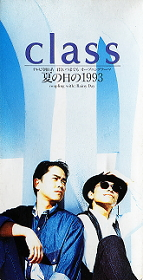

夏の日の1993
[年間15位] 1993年度オリコン
-
01. 夏の日の1993
作詞：松本 一起 作曲：佐藤 健 編曲：十川 知司テレビ朝日系「君といつまでも」OPテーマ/CM「セゾンカード」
-
02. Rainy Day
作詞：松本 一起 作曲：北村 勝彦 編曲：十川 知司
-
03. 夏の日の1993（Backing Track）
作詞：松本 一起 作曲：佐藤 健 編曲：十川 知司